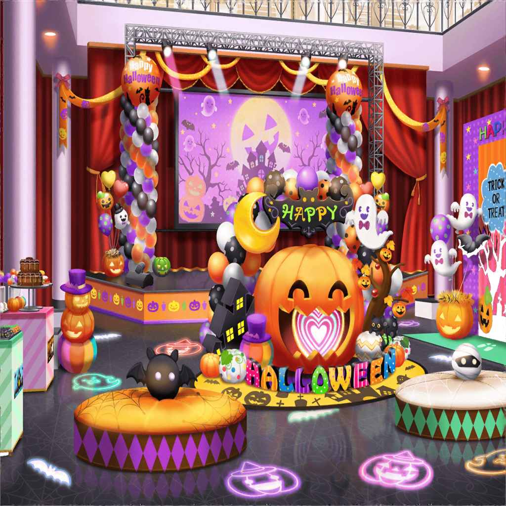

イベント会場
香澄
わーっ！ すごいすごい、完全にハロウィンモードだねーっ！
あっ、ほら見て、おっきなジャック・オー・ランタン！
沙綾
ホントだ、すごい！ バルーンでできてるのかな？
りみ
ハロウィンのお菓子もたくさん売ってるみたいだよ。
ん〜甘くていい匂い
ひまり
あれっ、香澄達じゃない？ やっほー！
香澄
ひまりちゃん？ 巴ちゃんにモカちゃんも！
モカ
こんなところで会うとは奇遇ですな〜
巴
みんな、いい感じに仮装してるな。似合ってるぞ
香澄
ハロウィンを思いっきり楽しもうと思って！
巴ちゃん達もすっごく似合ってる！
ひまり
そーだ！ ねえねえ、せっかくだしみんなで
記念写真撮ろうよっ！
香澄
わぁ！ いいね、撮ろう撮ろうっ！
沙綾
それなら、あそこにフォトスポットがあるよ
りみ
ハロウィンっぽく飾られててめっちゃかわいい〜
モカ
掛け声はどうする〜？ はい、チーズじゃフツーだし、
はい、かぼちゃ的な〜？
香澄
あははっ、そこはやっぱり、ハロウィンらしく
『ハッピーハロウィン！』じゃない？
巴
おっ、いいな。賛成！
ひまり
それじゃあ撮るよ、寄って寄って〜！ せーの！
全員
ハッピーハロウィン！
ひまり
うん、バッチリ♪ あとでみんなにも送るねっ！
香澄
ありがとうっ！ よーし、今日はみんな、
キラキラドキドキの最高の１日にしようねっ！